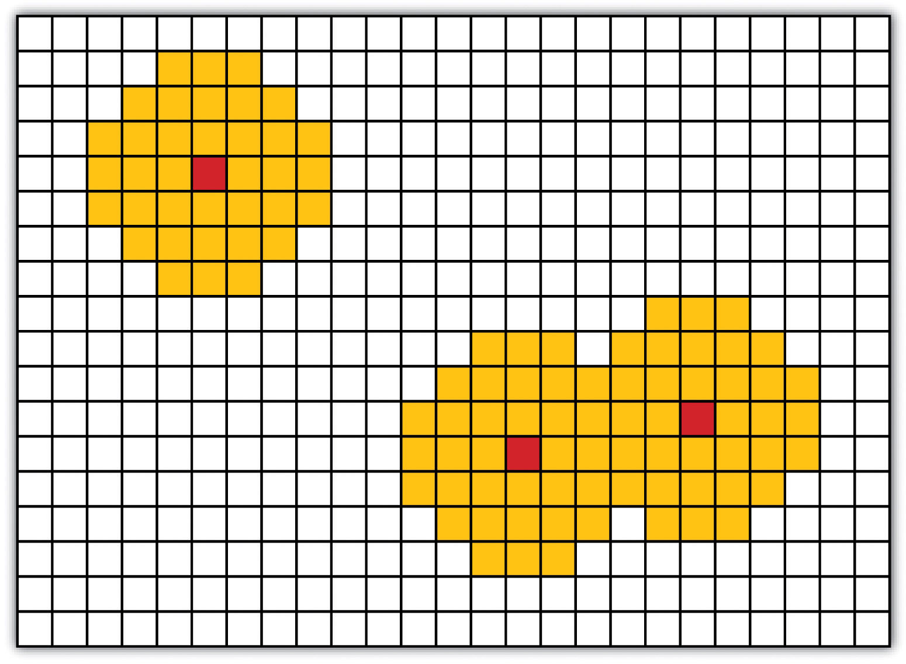
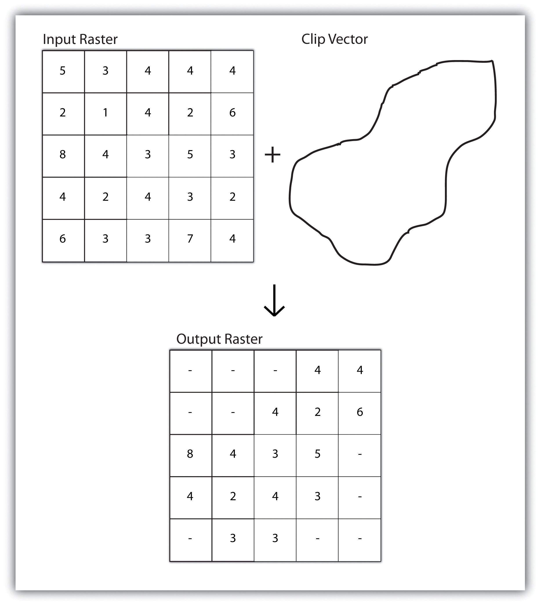
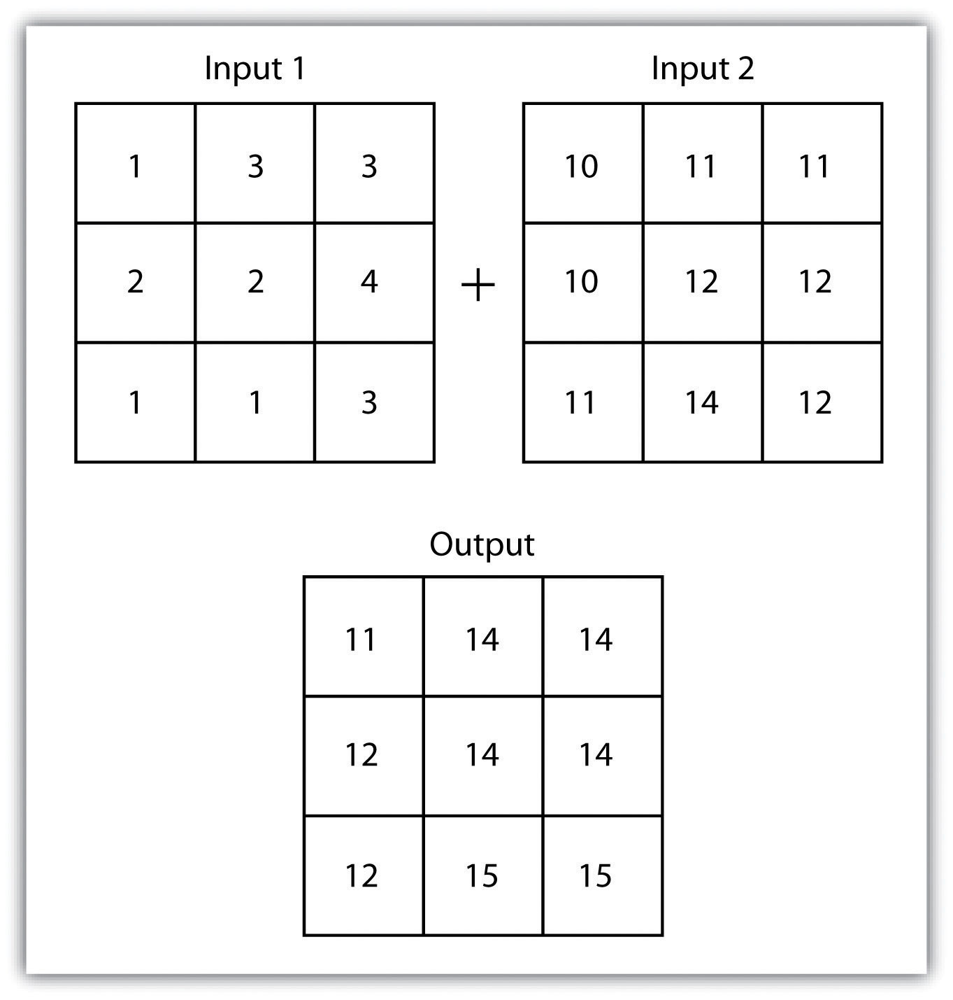
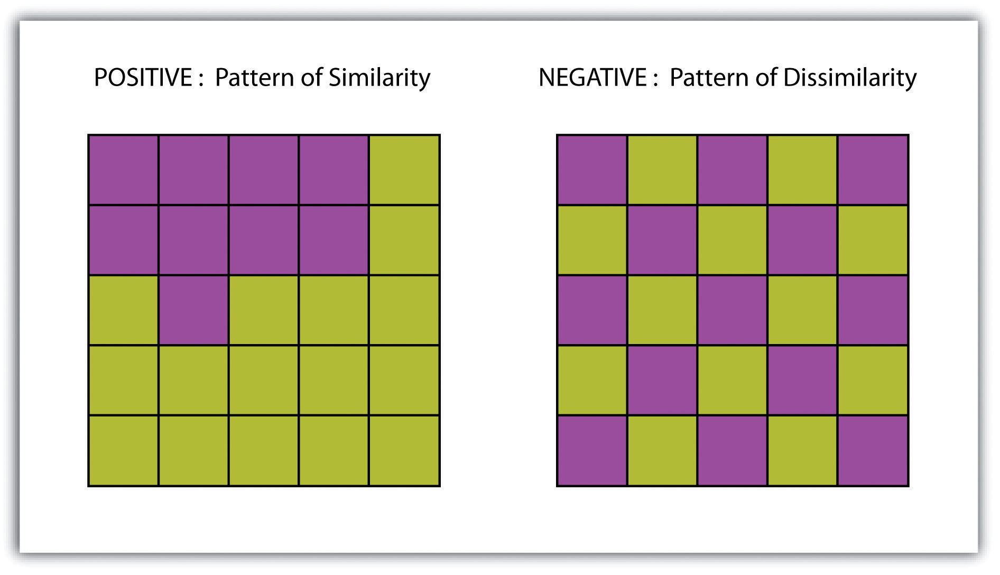
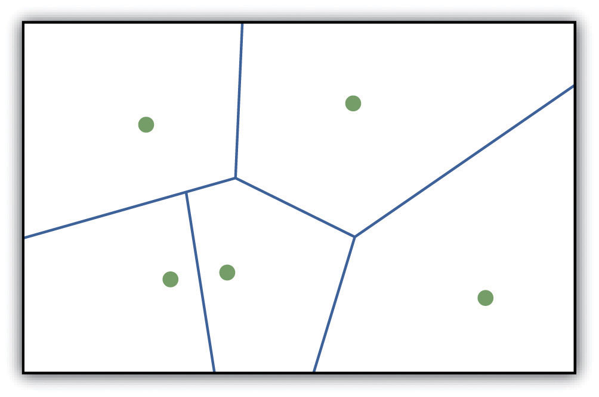
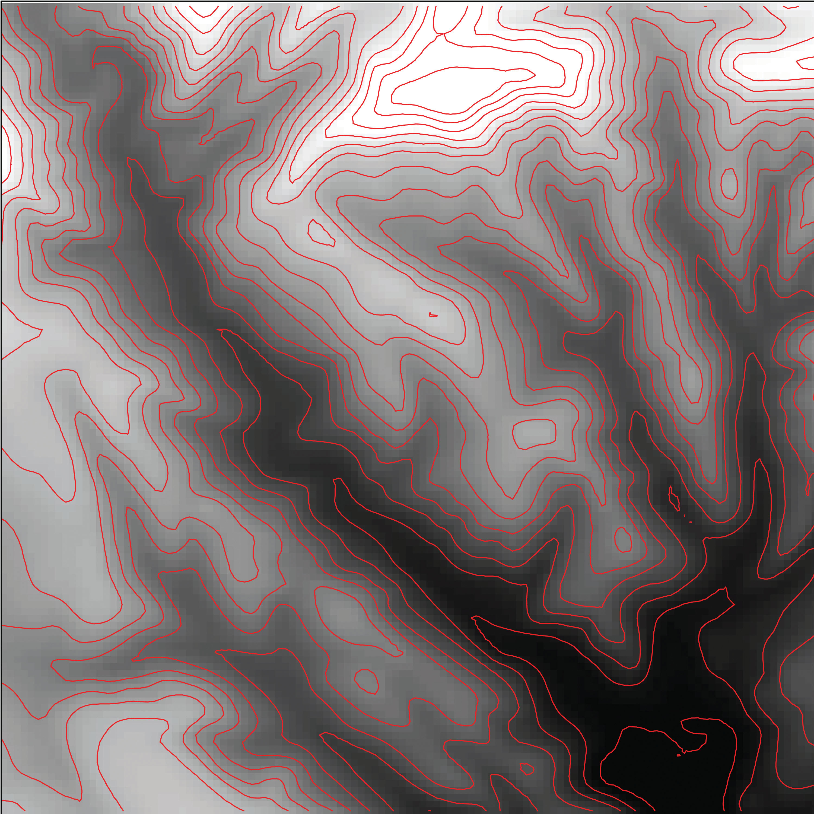

Following our discussion of attribute and vector data analysis, raster data analysis presents the final powerful data mining tool available to geographers. Raster data are particularly suited to certain types of analyses, such as basic geoprocessing (Section 8.1 "Basic Geoprocessing with Rasters"), surface analysis (Section 8.2 "Scale of Analysis"), and terrain mapping (Section 8.3 "Surface Analysis: Spatial Interpolation"). While not always true, raster data can simplify many types of spatial analyses that would otherwise be overly cumbersome to perform on vector datasets. Some of the most common of these techniques are presented in this chapter.
Like the geoprocessing tools available for use on vector datasets (Section 8.1 "Basic Geoprocessing with Rasters"), raster data can undergo similar spatial operations. Although the actual computation of these operations is significantly different from their vector counterparts, their conceptual underpinning is similar. The geoprocessing techniques covered here include both single layer (Section 8.1.1 "Single Layer Analysis") and multiple layer (Section 8.1.2 "Multiple Layer Analysis") operations.
Reclassifying, or recoding, a dataset is commonly one of the first steps undertaken during raster analysis. Reclassification is basically the single layer process of assigning a new class or range value to all pixels in the dataset based on their original values (Figure 8.1 "Raster Reclassification". For example, an elevation grid commonly contains a different value for nearly every cell within its extent. These values could be simplified by aggregating each pixel value in a few discrete classes (i.e., 0–100 = “1,” 101–200 = “2,” 201–300 = “3,” etc.). This simplification allows for fewer unique values and cheaper storage requirements. In addition, these reclassified layers are often used as inputs in secondary analyses, such as those discussed later in this section.
Figure 8.1 Raster Reclassification

As described in Chapter 7 "Geospatial Analysis I: Vector Operations", buffering is the process of creating an output dataset that contains a zone (or zones) of a specified width around an input feature. In the case of raster datasets, these input features are given as a grid cell or a group of grid cells containing a uniform value (e.g., buffer all cells whose value = 1). Buffers are particularly suited for determining the area of influence around features of interest. Whereas buffering vector data results in a precise area of influence at a specified distance from the target feature, raster buffers tend to be approximations representing those cells that are within the specified distance range of the target (Figure 8.2 "Raster Buffer around a Target Cell(s)"). Most geographic information system (GIS) programs calculate raster buffers by creating a grid of distance values from the center of the target cell(s) to the center of the neighboring cells and then reclassifying those distances such that a “1” represents those cells composing the original target, a “2” represents those cells within the user-defined buffer area, and a “0” represents those cells outside of the target and buffer areas. These cells could also be further classified to represent multiple ring buffers by including values of “3,” “4,” “5,” and so forth, to represent concentric distances around the target cell(s).
Figure 8.2 Raster Buffer around a Target Cell(s)
A raster dataset can also be clipped similar to a vector dataset (Figure 8.3 "Clipping a Raster to a Vector Polygon Layer"). Here, the input raster is overlain by a vector polygon clip layer. The raster clip process results in a single raster that is identical to the input raster but shares the extent of the polygon clip layer.
Figure 8.3 Clipping a Raster to a Vector Polygon Layer
Raster overlays are relatively simple compared to their vector counterparts and require much less computational power (Burroughs 1983).Burroughs, P. 1983. Geographical Information Systems for Natural Resources Assessment. New York: Oxford University Press. Despite their simplicity, it is important to ensure that all overlain rasters are coregistered (i.e., spatially aligned), cover identical areas, and maintain equal resolution (i.e., cell size). If these assumptions are violated, the analysis will either fail or the resulting output layer will be flawed. With this in mind, there are several different methodologies for performing a raster overlay (Chrisman 2002).Chrisman, N. 2002. Exploring Geographic Information Systems. 2nd ed. New York: John Wiley and Sons.
The mathematical raster overlayPixel or grid cell values in each map are combined using mathematical operators to produce a new value in the composite map. is the most common overlay method. The numbers within the aligned cells of the input grids can undergo any user-specified mathematical transformation. Following the calculation, an output raster is produced that contains a new value for each cell (Figure 8.4 "Mathematical Raster Overlay"). As you can imagine, there are many uses for such functionality. In particular, raster overlay is often used in risk assessment studies where various layers are combined to produce an outcome map showing areas of high risk/reward.
Figure 8.4 Mathematical Raster Overlay
Two input raster layers are overlain to produce an output raster with summed cell values.
The Boolean raster overlayPixel or grid cell values in each map are combined using boolean operators to produce a new value in the composite map. method represents a second powerful technique. As discussed in Chapter 6 "Data Characteristics and Visualization", the Boolean connectors AND, OR, and XOR can be employed to combine the information of two overlying input raster datasets into a single output raster. Similarly, the relational raster overlayPixel or grid cell values in each map are combined using relational operators to produce a new value in the composite map. method utilizes relational operators (<, <=, =, <>, >, and =>) to evaluate conditions of the input raster datasets. In both the Boolean and relational overlay methods, cells that meet the evaluation criteria are typically coded in the output raster layer with a 1, while those evaluated as false receive a value of 0.
The simplicity of this methodology, however, can also lead to easily overlooked errors in interpretation if the overlay is not designed properly. Assume that a natural resource manager has two input raster datasets she plans to overlay; one showing the location of trees (“0” = no tree; “1” = tree) and one showing the location of urban areas (“0” = not urban; “1” = urban). If she hopes to find the location of trees in urban areas, a simple mathematical sum of these datasets will yield a “2” in all pixels containing a tree in an urban area. Similarly, if she hopes to find the location of all treeless (or “non-tree,” nonurban areas, she can examine the summed output raster for all “0” entries. Finally, if she hopes to locate urban, treeless areas, she will look for all cells containing a “1.” Unfortunately, the cell value “1” also is coded into each pixel for nonurban, tree cells. Indeed, the choice of input pixel values and overlay equation in this example will yield confounding results due to the poorly devised overlay scheme.
Raster analyses can be undertaken on four different scales of operation: local, neighborhood, zonal, and global. Each of these presents unique options to the GIS analyst and are presented here in this section.
Local operationsOperations performed on a single, target cell. can be performed on single or multiple rasters. When used on a single raster, a local operation usually takes the form of applying some mathematical transformation to each individual cell in the grid. For example, a researcher may obtain a digital elevation model (DEM) with each cell value representing elevation in feet. If it is preferred to represent those elevations in meters, a simple, arithmetic transformation (original elevation in feet * 0.3048 = new elevation in meters) of each cell value can be performed locally to accomplish this task.
When applied to multiple rasters, it becomes possible to perform such analyses as changes over time. Given two rasters containing information on groundwater depth on a parcel of land at Year 2000 and Year 2010, it is simple to subtract these values and place the difference in an output raster that will note the change in groundwater between those two times (Figure 8.5 "Local Operation on a Raster Dataset"). These local analyses can become somewhat more complicated however, as the number of input rasters increase. For example, the Universal Soil Loss Equation (USLE) applies a local mathematical formula to several overlying rasters including rainfall intensity, erodibility of the soil, slope, cultivation type, and vegetation type to determine the average soil loss (in tons) in a grid cell.
Figure 8.5 Local Operation on a Raster Dataset

Tobler’s first law of geography states that “everything is related to everything else, but near things are more related than distant things.” Neighborhood operationsOperations performed on a central, target cell and surrounding cells. represent a group of frequently used spatial analysis techniques that rely heavily on this concept. Neighborhood functions examine the relationship of an object with similar surrounding objects. They can be performed on point, line, or polygon vector datasets as well as on raster datasets. In the case of vector datasets, neighborhood analysis is most frequently used to perform basic searches. For example, given a point dataset containing the location of convenience stores, a GIS could be employed to determine the number of stores within 5 miles of a linear feature (i.e., Interstate 10 in California).
Neighborhood analyses are often more sophisticated when used with raster datasets. Raster analyses employ moving windows, also called filters or kernels, to calculate new cell values for every location throughout the raster layer’s extent. These moving windows can take many different forms depending on the type of output desired and the phenomena being examined. For example, a rectangular, 3-by-3 moving window is commonly used to calculate the mean, standard deviation, sum, minimum, maximum, or range of values immediately surrounding a given “target” cell (Figure 8.6 "Common Neighborhood Types around Target Cell “x”: (a) 3 by 3, (b) Circle, (c) Annulus, (d) Wedge"). The target cellCell found in the center of the 3-by-3 moving window. is that cell found in the center of the 3-by-3 moving window. The moving window passes over every cell in the raster. As it passes each central target cell, the nine values in the 3-by-3 window are used to calculate a new value for that target cell. This new value is placed in the identical location in the output raster. If one wanted to examine a larger sphere of influence around the target cells, the moving window could be expanded to 5 by 5, 7 by 7, and so forth. Additionally, the moving window need not be a simple rectangle. Other shapes used to calculate neighborhood statistics include the annulus, wedge, and circle (Figure 8.6 "Common Neighborhood Types around Target Cell “x”: (a) 3 by 3, (b) Circle, (c) Annulus, (d) Wedge").
Figure 8.6 Common Neighborhood Types around Target Cell “x”: (a) 3 by 3, (b) Circle, (c) Annulus, (d) Wedge

Neighborhood operations are commonly used for data simplification on raster datasets. An analysis that averages neighborhood values would result in a smoothed output raster with dampened highs and lows as the influence of the outlying data values are reduced by the averaging process. Alternatively, neighborhood analyses can be used to exaggerate differences in a dataset. Edge enhancement is a type of neighborhood analysis that examines the range of values in the moving window. A large range value would indicate that an edge occurs within the extent of the window, while a small range indicates the lack of an edge.
A zonal operation is employed on groups of cells of similar value or like features, not surprisingly called zones (e.g., land parcels, political/municipal units, waterbodies, soil/vegetation types). These zones could be conceptualized as raster versions of polygons. Zonal rasters are often created by reclassifying an input raster into just a few categories (see Section 8.2.2 "Neighborhood Operations"). Zonal operations may be applied to a single raster or two overlaying rasters. Given a single input raster, zonal operations measure the geometry of each zone in the raster, such as area, perimeter, thickness, and centroid. Given two rasters in a zonal operation, one input raster and one zonal raster, a zonal operation produces an output raster, which summarizes the cell values in the input raster for each zone in the zonal raster (Figure 8.7 "Zonal Operation on a Raster Dataset").
Figure 8.7 Zonal Operation on a Raster Dataset

Zonal operations and analyses are valuable in fields of study such as landscape ecology where the geometry and spatial arrangement of habitat patches can significantly affect the type and number of species that can reside in them. Similarly, zonal analyses can effectively quantify the narrow habitat corridors that are important for regional movement of flightless, migratory animal species moving through otherwise densely urbanized areas.
Global operationsOperations performed over the entire extent of a dataset. are similar to zonal operations whereby the entire raster dataset’s extent represents a single zone. Typical global operations include determining basic statistical values for the raster as a whole. For example, the minimum, maximum, average, range, and so forth can be quickly calculated over the entire extent of the input raster and subsequently be output to a raster in which every cell contains that calculated value (Figure 8.8 "Global Operation on a Raster Dataset").
Figure 8.8 Global Operation on a Raster Dataset

A surfaceA vector or raster dataset that contains an attribute value for every locale throughout its extent. is a vector or raster dataset that contains an attribute value for every locale throughout its extent. In a sense, all raster datasets are surfaces, but not all vector datasets are surfaces. Surfaces are commonly used in a geographic information system (GIS) to visualize phenomena such as elevation, temperature, slope, aspect, rainfall, and more. In a GIS, surface analyses are usually carried out on either raster datasets or TINs (Triangular Irregular Network; Chapter 5 "Geospatial Data Management", Section 5.3.1 "Vector File Formats"), but isolines or point arrays can also be used. Interpolation is used to estimate the value of a variable at an unsampled location from measurements made at nearby or neighboring locales. Spatial interpolation methods draw on the theoretical creed of Tobler’s first law of geography, which states that “everything is related to everything else, but near things are more related than distant things.” Indeed, this basic tenet of positive spatial autocorrelationThe result of similar values occurring near by each other. forms the backbone of many spatial analyses (Figure 8.9 "Positive and Negative Spatial Autocorrelation").
Figure 8.9 Positive and Negative Spatial Autocorrelation
The ability to create a surface is a valuable tool in a GIS. The creation of raster surfaces, however, often starts with the creation of a vector surface. One common method to create such a vector surface from point data is via the generation of Thiessen (or Voronoi) polygons. Thiessen polygons are mathematically generated areas that define the sphere of influence around each point in the dataset relative to all other points (Figure 8.10 "A Vector Surface Created Using Thiessen Polygons"). Specifically, polygon boundaries are calculated as the perpendicular bisectors of the lines between each pair of neighboring points. The derived Thiessen polygons can then be used as crude vector surfaces that provide attribute information across the entire area of interest. A common example of Thiessen polygons is the creation of a rainfall surface from an array of rain gauge point locations. Employing some basic reclassification techniques, these Thiessen polygons can be easily converted to equivalent raster representations.
Figure 8.10 A Vector Surface Created Using Thiessen Polygons
While the creation of Thiessen polygons results in a polygon layer whereby each polygon, or raster zone, maintains a single value, interpolationA potentially complex statistical technique that estimates the value of all unknown points between the known points. is a potentially complex statistical technique that estimates the value of all unknown points between the known points. The three basic methods used to create interpolated surfaces are spline, inverse distance weighting (IDW), and trend surface. The spline interpolation method forces a smoothed curve through the set of known input points to estimate the unknown, intervening values. IDW interpolation estimates the values of unknown locations using the distance to proximal, known values. The weight placed on the value of each proximal value is in inverse proportion to its spatial distance from the target locale. Therefore, the farther the proximal point, the less weight it carries in defining the target point’s value. Finally, trend surface interpolation is the most complex method as it fits a multivariate statistical regression model to the known points, assigning a value to each unknown location based on that model.
Other highly complex interpolation methods exist such as kriging. KrigingA complex geostatistical technique that employs semivariograms to interpolate the values of an input point layer and is more akin to a regression analysis. is a complex geostatistical technique, similar to IDW, that employs semivariograms to interpolate the values of an input point layer and is more akin to a regression analysis (Krige 1951).Krige, D. 1951. A Statistical Approach to Some Mine Valuations and Allied Problems at the Witwatersrand. Master’s thesis. University of Witwatersrand. The specifics of the kriging methodology will not be covered here as this is beyond the scope of this text. For more information on kriging, consult review texts such as Stein (1999).Stein, M. 1999. Statistical Interpolation of Spatial Data: Some Theories for Kriging. New York: Springer.
Inversely, raster data can also be used to create vector surfaces. For instance, isoline maps are made up of continuous, nonoverlapping lines that connect points of equal value. Isolines have specific monikers depending on the type of information they model (e.g., elevation = contour lines, temperature = isotherms, barometric pressure = isobars, wind speed = isotachs) Figure 8.11 "Contour Lines Derived from a DEM" shows an isoline elevation map. As the elevation values of this digital elevation model (DEM) range from 450 to 950 feet, the contour lines are placed at 500, 600, 700, 800, and 900 feet elevations throughout the extent of the image. In this example, the contour interval, defined as the vertical distance between each contour line, is 100 feet. The contour interval is determined by the user during the creating of the surface.
Figure 8.11 Contour Lines Derived from a DEM
Surface analysis is often referred to as terrain (elevation) analysisVector or raster dataset that contains an attribute value for every locale throughout its extent. when information related to slope, aspect, viewshed, hydrology, volume, and so forth are calculated on raster surfaces such as DEMs (digital elevation models; Chapter 5 "Geospatial Data Management", Section 5.3.1 "Vector File Formats"). In addition, surface analysis techniques can also be applied to more esoteric mapping efforts such as probability of tornados or concentration of infant mortalities in a given region. In this section we discuss a few methods for creating surfaces and common surface analysis techniques related to terrain datasets.
Several common raster-based neighborhood analyses provide valuable insights into the surface properties of terrain. Slope mapsA map depicting rasterized slope values throughout its extent. (part (a) of Figure 8.12 "(a) Slope, (b) Aspect, and (c and d) Hillshade Maps") are excellent for analyzing and visualizing landform characteristics and are frequently used in conjunction with aspect maps (defined later) to assess watershed units, inventory forest resources, determine habitat suitability, estimate slope erosion potential, and so forth. They are typically created by fitting a planar surface to a 3-by-3 moving window around each target cell. When dividing the horizontal distance across the moving window (which is determined via the spatial resolution of the raster image) by the vertical distance within the window (measure as the difference between the largest cell value and the central cell value), the slope is relatively easily obtained. The output raster of slope values can be calculated as either percent slope or degree of slope.
Any cell that exhibits a slope must, by definition, be oriented in a known direction. This orientation is referred to as aspect. Aspect mapsA map depicting rasterized aspect values throughout its extent. (part (b) of Figure 8.12 "(a) Slope, (b) Aspect, and (c and d) Hillshade Maps") use slope information to produce output raster images whereby the value of each cell denotes the direction it faces. This is usually coded as either one of the eight ordinal directions (north, south, east, west, northwest, northeast, southwest, southeast) or in degrees from 1° (nearly due north) to 360° (back to due north). Flat surfaces have no aspect and are given a value of −1. To calculate aspect, a 3-by-3 moving window is used to find the highest and lowest elevations around the target cell. If the highest cell value is located at the top-left of the window (“top” being due north) and the lowest value is at the bottom-right, it can be assumed that the aspect is southeast. The combination of slope and aspect information is of great value to researchers such as botanists and soil scientists because sunlight availability varies widely between north-facing and south-facing slopes. Indeed, the various light and moisture regimes resulting from aspect changes encourage vegetative and edaphic differences.
A hillshade mapA map showing relative relief based on elevation of the desired area, the illumination source of which can be rotated and tilted to any desired angle for viewing. (part (c) of Figure 8.12 "(a) Slope, (b) Aspect, and (c and d) Hillshade Maps") represents the illumination of a surface from some hypothetical, user-defined light source (presumably, the sun). Indeed, the slope of a hill is relatively brightly lit when facing the sun and dark when facing away. Using the surface slope, aspect, angle of incoming light, and solar altitude as inputs, the hillshade process codes each cell in the output raster with an 8-bit value (0–255) increasing from black to white. As you can see in part (c) of Figure 8.12 "(a) Slope, (b) Aspect, and (c and d) Hillshade Maps", hillshade representations are an effective way to visualize the three-dimensional nature of land elevations on a two-dimensional monitor or paper map. Hillshade maps can also be used effectively as a baseline map when overlain with a semitransparent layer, such as a false-color digital elevation model (DEM; part (d) of Figure 8.12 "(a) Slope, (b) Aspect, and (c and d) Hillshade Maps").
Figure 8.12 (a) Slope, (b) Aspect, and (c and d) Hillshade Maps

Source: Data available from U.S. Geological Survey, Earth Resources Observation and Science (EROS) Center, Sioux Falls, SD.
Viewshed analysisThe processing of determining the areas visible from a specific location. is a valuable visualization technique that uses the elevation value of cells in a DEM or TIN (Triangulated Irregular Network) to determine those areas that can be seen from one or more specific location(s) (part (a) of Figure 8.13 "(a) Viewshed and (b) Watershed Maps"). The viewing location can be either a point or line layer and can be placed at any desired elevation. The output of the viewshed analysis is a binary raster that classifies cells as either 1 (visible) or 0 (not visible). In the case of two viewing locations, the output raster values would be 2 (visible from both points), 1 (visible from one point), or 0 (not visible from either point).
Additional parameters influencing the resultant viewshed map are the viewing azimuth (horizontal and/or vertical) and viewing radius. The horizontal viewing azimuth is the horizontal angle of the view area and is set to a default value of 360°. The user may want to change this value to 90° if, for example, the desired viewshed included only the area that could be seen from an office window. Similarly, vertical viewing angle can be set from 0° to 180°. Finally, the viewing radius determines the distance from the viewing location that is to be included in the output. This parameter is normally set to infinity (functionally, this includes all areas within the DEM or TIN under examination). It may be decreased if, for instance, you only wanted to include the area within the 100 km broadcast range of a radio station.
Similarly, watershed analysesThe process of determining the direction of water flow over a desired area. are a series of surface analysis techniques that define the topographic divides that drain surface water for stream networks (part (b) of Figure 8.13 "(a) Viewshed and (b) Watershed Maps"). In geographic information systems (GISs), a watershed analysis is based on input of a “filled” DEM. A filled DEM is one that contains no internal depressions (such as would be seen in a pothole, sink wetland, or quarry). From these inputs, a flow direction raster is created to model the direction of water movement across the surface. From the flow direction information, a flow accumulation raster calculates the number of cells that contribute flow to each cell. Generally speaking, cells with a high value of flow accumulation represent stream channels, while cells with low flow accumulation represent uplands. With this in mind, a network of rasterized stream segments is created. These stream networks are based on some user-defined minimum threshold of flow accumulation. For example, it may be decided that a cell needs at least one thousand contributing cells to be considered a stream segment. Altering this threshold value will change the density of the stream network. Following the creation of the stream network, a stream link raster is calculated whereby each stream segment (line) is topologically connected to stream intersections (nodes). Finally, the flow direction and stream link raster datasets are combined to determine the output watershed raster as seen in part (b) of Figure 8.13 "(a) Viewshed and (b) Watershed Maps" (Chang 2008).Chang, K. 2008. Introduction to Geographic Information Systems. New York: McGraw-Hill. Such analyses are invaluable for watershed management and hydrologic modeling.
Figure 8.13 (a) Viewshed and (b) Watershed Maps

Source: Data available from U.S. Geological Survey, Earth Resources Observation and Science (EROS) Center, Sioux Falls, SD.